토목산업기사 (2014-03-02 기출문제)
1과목: 응용역학
1. 그림과 같은 트러스에서 사재(斜材) D의 부재력은?
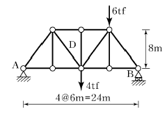
- 3.112 tf
- 4.375 tf
- 5.465 tf
- 6.522 tf
(정답률: 79%)

2. 다음 3힌지 라멘에서 A점의 수평반력(HA)은?
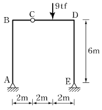
- 1 tf
- 2 tf
- 3 tf
- 4 tf
(정답률: 74%)
3. 다음 중 부정정 구조의 해법이 아닌 것은?
- 처짐각법
- 변위일치법
- 모멘트 분배법
- 공액보법
(정답률: 71%)
4. 기둥에서 단면의 핵이란 단주(短柱)에서 인장응력이 발생되지 않도록 재하되는 편심거리로 정의된다. 반지름 20cm인 원형 단면의 핵은 중심에서 얼마인가?
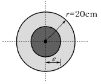
- 2.5cm
- 4cm
- 5cm
- 7.5cm
(정답률: 84%)
5. 무게 12tf인 그림과 같은 구조물을 밀어 넘길 수 있는 수평집중하중 P 는?
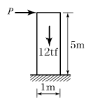
- 1.2tf
- 1.8tf
- 2.2tf
- 2.8tf
(정답률: 75%)
6. 정사각형의 중앙에 지름 20cm의 원이 있는 그림과 같은 도형에서 x축에 대한 단면2차모멘트를 구한 값은?
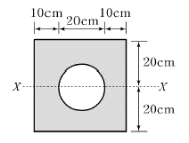
- 2⑤,479 cm4
- 215,479 cm4
- 225,479 cm4
- 235,479 cm4
(정답률: 84%)
7. 지름 D인 원형 단면에 전단력 S가 작용할 때 최대 전단응력의 값은?
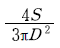
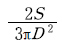
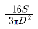
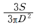
(정답률: 74%)
8. 다음 단순보의 지점 A에서의 처짐각 θA는 얼마인가? (단, EI 는 일정)(오류 신고가 접수된 문제입니다. 반드시 정답과 해설을 확인하시기 바랍니다.)
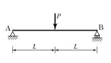
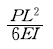
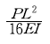
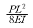
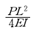
(정답률: 30%)
9. 그림과 같이 ABC의 중앙점에 10tf의 하중을 달았을 때 정지하였다면 장력 T의 값은 몇 tf인가?
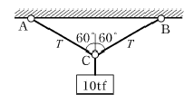
- 10
- 8.66
- 5
- 15
(정답률: 83%)
10. 다음 단순보에서 지점 반력을 계산한 값은?
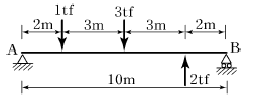
- RA=1 tf, RB=1 tf
- RA=1.9 tf, RB=0.1 tf
- RA=1.4 tf, RB=0.6 tf
- RA=0.1 tf, RB=1.9 tf
(정답률: 83%)
11. 스팬 L인 양단 고정보의 중앙에 집중하중 P가 작용할 때 고정단모멘트의 크기는?
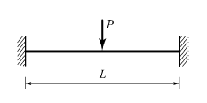
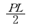
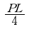
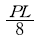
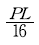
(정답률: 53%)
12. 다음 그림에서와 같은 평행력(平行力)에 있어서 P1 , P2 , P3 , P4의 합력의 위치는 O점에서 얼마의 거리에 있겠는가?(오류 신고가 접수된 문제입니다. 반드시 정답과 해설을 확인하시기 바랍니다.)
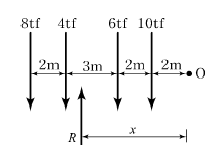
- 4.8m
- 5.4m
- 5.8m
- 6.0m
(정답률: 47%)
13. 모든 도형에서 도심을 지나는 축에 대한 단면1차모멘트 값의 범위로 옳은 설명은?
- 0이다.
- 0보다 크다.
- 0보다 작다.
- 0에서 1 사이의 값을 갖는다.
(정답률: 75%)
14. 그림과 같은 구조물은 몇 차 부정정 구조물인가?
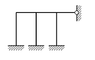
- 7차
- 8차
- 9차
- 11차
(정답률: 68%)
15. 그림에서 (A)의 장주(長住)가 4tf에 견딜 수 있다면 (B)의 장주가 견딜 수 있는 하중은?
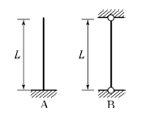
- 4tf
- 8tf
- 16tf
- 64tf
(정답률: 80%)
16. 그림과 같은 보에서 C점의 처짐을 구하면? (단, EI=2×109 kgf⋅cm2 )
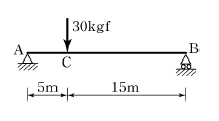
- 0.821cm
- 1.406cm
- 1.641cm
- 2.812cm
(정답률: 67%)
17. 단면적 3cm2인 강봉이 그림과 같은 힘을 받을 때 강봉이 늘어난 길이는? (단, E=2.0×10 6kgf/cm2 )
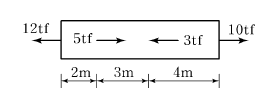
- 1.13cm
- 1.42cm
- 1.68cm
- 1.76cm
(정답률: 58%)
18. 그림과 같은 직사각형 단면의 보가 휨모멘트 M max =4.5 tf⋅m를 받을 때 상단에서 5cm 떨어진 a-a 단면에서의 휨응력은?
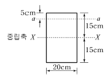
- 92.3kgf/cm2
- 100kgf/cm2
- 112.6kgf/cm2
- 121.4kgf/cm2
(정답률: 69%)
19. 다음과 같은 단순보에서 A점 반력( R A)으로 옳은 것은?
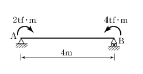
- 0.5 tf(↓)
- 2.0 tf(↓)
- 0.5 tf(↑)
- 2.0 tf(↑)
(정답률: 73%)
20. 탄성에너지에 대한 설명으로 옳은 것은?
- 응력에 반비례하고 탄성계수에 비례한다.
- 응력의 제곱에 반비례하고 탄성계수에 비례한다.
- 응력에 비례하고 탄성계수의 제곱에 비례한다.
- 응력의 제곱에 비례하고 탄성계수에 반비례한다.
(정답률: 70%)
2과목: 측량학
21. 곡선 설치에서 교각이 35°, 원곡선 반지름이 500m일 때 도로 기점으로부터 곡선 시점까지의 거리가 315.45m이면 도로 기점으로부터 곡선 종점까지의 거리는?
- 593.38m
- 596.88m
- 620.88m
- 625.36m
(정답률: 73%)
22. 사진측량의 특징에 대한 설명으로 옳지 않은 것은?
- 연속 촬영을 통해 움직이는 대상물의 상태 변화 감지가 가능하다.
- 기상에 관계없이 위치 결정이 가능하다.
- 접근이 곤란한 지역의 대상물 측량이 가능하다.
- 다양한 목적에 따라 축척 변경이 용이하다.
(정답률: 80%)
23. 지형도 제작에 주로 사용되는 측량방법으로 가장 거리가 먼 것은?
- 항공사진측량에 의한 방법
- GPS측량에 의한 방법
- 토털스테이션을 이용한 방법
- 시거측량에 의한 방법
(정답률: 71%)
24. 거리측량의 오차를 1/105 까지 허용한다면 지구상에 평면으로 간주할 수 있는 거리는? (단, 지구의 곡률반지름은 6,300km로 가정)
- 약 22km
- 약 44km
- 약 59km
- 약 69km
(정답률: 57%)
25. 하천측량의 고저측량에 해당되지 않는 것은?
- 종단측량
- 유량관측
- 횡단관측
- 심천측량
(정답률: 73%)
26. 그림과 같은 삼각망에서 각방정식의 수는?
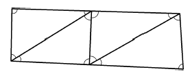
- 2
- 4
- 6
- 9
(정답률: 67%)
27. 2점간의 거리를 관측한 결과가 아래 표와 같을 때, 최확값은?
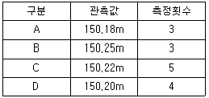
- 150.18m
- 150.21m
- 150.23m
- 150.25m
(정답률: 77%)
28. 삼각측량의 선점을 위한 고려사항으로 옳지 않은 것은?
- 삼각점은 측량구역 내에서 한 쪽에 편중되지 않도록 고른 밀도로 배치하는 것이 좋다.
- 배치는 정삼각형의 형태로 하는 것이 좋다.
- 삼각점은 발견이 쉽고 견고한 지점, 항공사진 상에 판별될 수 있는 위치에 선정하는 것이 좋다.
- 측점의 수는 될 수 있는 대로 많게 하고 이동이 편리한 구조로 설치하는 것이 좋다.
(정답률: 77%)
29. 각 점의 좌표가 표와 같을 때, △ABC의 면적은?
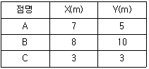
- 9m2
- 12m2
- 15m2
- 18m2
(정답률: 61%)
30. 평면직각좌표에서 삼각점의 좌표가 X(N) = -450.36m, Y(E) = -65.473m일 때 좌표원점을 중심으로 한 삼각점의 방위각은?
- 8° 16' 30 “
- 81° 44' 12 "
- 188° 16' 18 "
- 261° 44' 26 "
(정답률: 59%)
31. 지반고 120.50m인 A점에 기계고 1.23m 토털스테이션을 세워 수평거리 90m 떨어진 B점에 세운 높이 1.95m의 타켓을 시준하면서 부(-)각 30°를 얻었다면 B점의 지반고는?
- 65.36m
- 67.82m
- 171.74m
- 175.64m
(정답률: 60%)
32. 수준측량에서 도로의 종단측량과 같이 중간시가 많은 경우에 현장에서 주로 사용하는 야장기입법은?
- 기고식
- 고차식
- 승강식
- 회귀식
(정답률: 81%)
33. 원곡선에 의한 종단곡선 설치에서 상향 경사 2%, 하향 경사 3% 사이에 곡선 반지름 R=200m로 설치할 때, 종단 곡선의 길이는?
- 5m
- 10m
- 15m
- 20m
(정답률: 55%)
34. 면적 1km2인 지역이 도상면적 16cm2의 도면으로 제작되었을 경우 이 도면의 축척은?
- 1/2,500
- 1/6,250
- 1/25,000
- 1/62,500
(정답률: 54%)
35. 평판측량 방법 중 측량지역 내에 장애물이 없어 시준이 용이한 소지역에 주로 사용하는 방법으로 평판을 한 번 세워서 방향과 거리를 관측하여 여러 점들의 위치를 결정할 수 있는 방법은?
- 편각법
- 교회법
- 전진법
- 방사법
(정답률: 71%)
36. 도로의 단곡선 계산에서 노선기점으로부터 교점까지의 추가거리와 교각을 알고 있을 때 곡선시점의 위치를 구하기 위해서 계산되어야 하는 요소는?
- 접선장(T.L)
- 곡선장(C.L)
- 중앙종거(M)
- 접선에 대한 지거(Y)
(정답률: 75%)
37. 항공사진에서 건물의 높이를 결정하기 위하여 건물의 최상단과 최하단의 시차차를 측정하니 0.04mm 이었다면 건물이 높이는? (단, 촬영고도 3,000m, 주점기선장은 15.96mm이었다.)
- 6.5m
- 7.0m
- 7.5m
- 8.5m
(정답률: 66%)
38. 산지에서 동일한 각관측의 정확도로 폐합트래버스를 관측한 결과 관측점수가 11개이고 측각오차는 1′15″이었다면 어떻게 처리해야 하는가? (단, 산지의 오차한계는 ±90″ n 을 적용한다.)
- 오차가 1' 이상이므로 재측하여야 한다.
- 관측각의 크기에 반비례하여 배분한다.
- 관측각의 크기에 비례하여 배분한다.
- 관측각의 크기에 상관없이 등분하여 배분한다.
(정답률: 58%)
39. 축척 1 : 25000 지형도에서 어느 산정으로부터 산밑까지의 수평거리가 5.6cm이고, 산정의 표고가 335.75m, 산 밑의 표고가 102.50m이었다면 경사는?
- 1/3
- 1/4
- 1/6
- 1/7
(정답률: 60%)
40. 노선측량의 완화곡선에 대한 설명 중 옳지 않은 것은?
- 완화곡선의 접선은 시점에서 원호에, 종점에서 직선에 접한다.
- 완화곡선의 반지름은 시점에서 무한대, 종점에서 원곡선 R로 된다.
- 클로소이드의 조합형식에는 S형, 복합형, 기본형등이 있다.
- 모든 클로소이드는 닮은꼴이며, 클로소이드 요소는 길이의 단위를 가진 것과 단위가 없는 것이 있다.
(정답률: 70%)
3과목: 수리학
41. 길이 100m의 관에서 양단의 압력 수두차가 20m인 조건에서 0.5m3/s를 송수하기 위한 관경은? (단, 마찰손실계수 f=0.03)
- 21.5cm
- 23.5cm
- 29.5cm
- 31.5cm
(정답률: 44%)
42. 초속 V0 의 사출수가 도달하는 수평 최대 거리는?
- 최대 연직높이의 1.2배이다.
- 최대 연직높이의 1.5배이다.
- 최대 연직높이의 2.0배이다.
- 최대 연직높이의 3.0배이다.
(정답률: 67%)
43. 수리학적으로 유리한 단면의 조건으로 옳은 것은?
- 경심(R)이 최소이어야 한다.
- 윤변(P)이 최대가 되어야 한다.
- 경심(R)과 윤변(P)의 곱이 최대가 되어야 한다.
- 경심(R)이 최대가 되거나 윤변(P)이 최소가 되어야 한다.
(정답률: 73%)
44. 유체 내부 임의의 점( x, y, z )에서의 시간 t 에 대한 속도성분을 각각 u , v, w로 표시하면, 정류이며 비압축성인 유체에 대한 연속방정식으로 옳은 것은? (단, ρ는 유체의 밀도이다.)
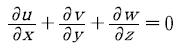
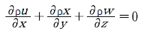
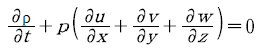
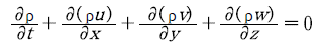
(정답률: 74%)
45. 삼각형 위어(weir)에서 유량에 비례하는 것은? (단, H는 위어의 월류수심이다.)
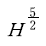
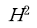
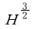
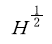
(정답률: 75%)
46. 가는 철사나 바늘을 조심해서 물 위에 놓으면 가라 앉지 않고 뜬다. 이와 같이 바늘이 물위에 뜨는 이유와 관계 되는 것은?
- 부력
- 점성력
- 마찰력
- 표면장력
(정답률: 73%)
47. Manning 공식의 조도계수 n 과 마찰손실계수 f 와의 관계식으로 옳은 것은? (단, 지름 D 인 원관인 경우)
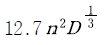
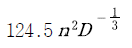
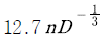
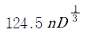
(정답률: 67%)
48. 지름이 D인 관수로에서 만관으로 흐를 때 경심 R은?
- 0
- D/2
- D/4
- 2D
(정답률: 70%)
49. 개수로에서 한계수심에 대한 설명으로 옳은 것은?
- 최대 비에너지에 대한 수심이다.
- 최소 비에너지에 대한 수심이다.
- 상류 흐름에 대한 수심이다.
- 사류 흐름에 대한 수심이다
(정답률: 74%)
50. 면적이 A인 평판(平板)이 수면으로부터 h가 되는 깊이에 수평으로 놓여있을 경우 이 면에 작용하는 전수압은? (단, 물의 단위 중량은 w 이다.)
- P=whA
- P=wh 2A
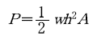
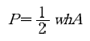
(정답률: 72%)
51. 흐름에 대한 설명으로 옳은 것은?
- 하나의 단면을 지나는 유량이 시간에 따라 변하지 않는 흐름을 등류라 하고, 홍수 시 흐름을 부등류라 한다.
- 인공수로와 같이 수심이나 수로 폭이 어느 단면에서나 동일한 경우 수로 내의 유속은 일정하므로 정류라 하고, 수로단면적이 같지 않을 때 부정류라 한다.
- 유체의 흐름이 흐름방향만 이동되고 직각방향에는 이동이 없는 흐름을 난류라 한다.
- 층류상태의 흐름은 개수로나 관수로에서보다 지하수에서 쉽게 볼 수 있다.
(정답률: 59%)
52. Dupuit의 침윤선(浸潤線) 공식의 유량은? (단, 직사각형 단면 제방 내부의 투수인 경우이며, 제방의 저면은 불투수층이고 q : 단위폭당 유량, L : 침윤거리, h1, h2 : 상하류의 수위, k : 투수계수)
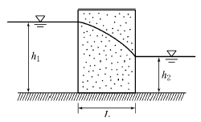
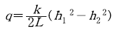
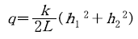
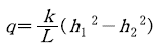
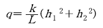
(정답률: 65%)
53. 그림과 같은 배의 무게가 882kN일 때 이 배가 운항하는데 필요한 최소수심은? (단, 물의 비중 = 1, 무게1kg = 9.8N)
- 1.2m
- 1.5m
- 1.8m
- 2.0m
(정답률: 60%)
54. 베르누이(Bernoulli)정리가 성립될 수 있는 조건이 아닌 것은?
- 임의의 두 점은 같은 유선 위에 있다.
- 마찰을 고려한 실제유체이다.
- 비압축성 유체의 흐름이다.
- 흐름은 정류이다.
(정답률: 68%)
55. 수조에서 수심 4m인 곳에 2개의 원형 오리피스를 만들어 10L/s의 물을 흐르게 하기 위한 지름은? (단, C=0.62)
- 2.96cm
- 3.04cm
- 3.41cm
- 3.62cm
(정답률: 48%)
56. 개수로에서 도수가 발생하게 될 때 도수 전의 수심이 0.5m, 유속이 7m/s이면 도수 후의 수심(h)은?
- 0.5
- 1.0
- 1.5
- 2.0m
(정답률: 36%)
57. 물의 성질에 대한 설명으로 옳지 않은 것은?
- 물의 점성계수는 수온이 높을수록 작아진다.
- 동점성계수는 수온에 따라 변하며 온도가 낮을수록 그 값은 크다.
- 물은 일정한 체적을 갖고 있으나 온도와 압력의 변화에 따라 어느 정도 팽창 또는 수축을 한다.
- 물의 단위중량은 0℃에서 최대이고 밀도는 4℃에서 최대이다.
(정답률: 73%)
58. 지하수의 유수 이동에 적용되는 다르시(Darcy)의 법칙은? (단, v : 유속, k : 투수계수, I : 동수경사, h : 수심, R : 동수반경, C : 유속계수)
- v=-kI
- v=C√RI
- v=kCI
- v=-kh
(정답률: 62%)
59. 에너지선에 대한 설명으로 옳은 것은?
- 유선 상의 각 점에서의 압력수두와 위치수두의 합을 연결한 선이다.
- 유체의 흐름방향을 결정한다.
- 이상유체 흐름에서는 수평기준면과 평행하다.
- 유량이 일정한 흐름에서는 동수경사선과 평행하다.
(정답률: 58%)
60. 후르드(Froude)수와 한계경사 및 흐름의 상태 중 상류일 조건으로 옳은 것은? (단, Fr : 후르드수, I : 수면경사, IC : 한계경사, V : 유속, VC : 한계유속, y : 수심, yC : 한계수심)
- V ＞ VC
- Fr ＞ 1
- I < Ic
- y < yc
(정답률: 74%)
4과목: 철근콘크리트 및 강구조
61. 강도 설계법으로 그림과 같은 단철근 T형단면 설계할 때의 설명 중 옳은 것은? (단, f ck=21MPa, fy=400MPa, As=6,000mm2이다.)
- 폭이 1,200mm인 직사각형 단면보로 계산한다.
- 폭이 400m인 직사각형 단면보로 계산한다.
- T형 단면보로 계산한다.
- T형 단면보나 직사각형 단면보나 상관없이 같은 값이 나온다.
(정답률: 64%)
62. 경간 10m인 대칭 T형보에서 양쪽 슬래브의 중심간 거리가 2,100mm, 플랜지 두께는 100mm, 복부의 폭(bw)은 400mm일 때 플랜지의 유효폭은?
- 2,500mm
- 2,250mm
- 2,100mm
- 2,000mm
(정답률: 73%)
63. 옹벽의 설계에 대한 일반적인 설명으로 틀린 것은?
- 활동에 대한 저항력은 옹벽에 작용하는 수평력의 1.5배 이상이어야 한다.
- 전도에 대한 저항휨모멘트는 횡토압에 의한 전도모멘트의 2.0배 이상이어야 한다.
- 캔틸레버식 옹벽의 전면벽은 저판에 지지된 캔틸레버로 설계할 수 있다.
- 뒷부벽은 직사각형보로 설계하여야 한다.
(정답률: 75%)
64. 경간이 8m인 캔틸레버 보에서 처짐을 계산하지 않는 경우 보의 최소 두께로서 옳은 것은? (단, 보통중량 콘크리트를 사용한 경우로서 fck=28MPa, fy=400 MPa이다.)
- 1,000mm
- 800mm
- 600mm
- 500mm
(정답률: 52%)
65. 그림과 같은 PSC보의 지간 중앙점에서 강선을 꺾었을 때 이 중앙점에서 상향력 U의 값은?
- 2F sin θ
- 4F sin θ
- 2F tan θ
- 4F tan θ
(정답률: 70%)
66. 휨부재에서 fck=28MPa, fy=400MPa일 때 인장철근 D29(공칭지름 28.6mm, 공칭단면적 642mm2)의 기본정착 길이 (ldb)는 약 얼마인가?
- 1,200mm
- 1,250mm
- 1,300mm
- 1,350mm
(정답률: 78%)
67. 그림에 나타난 직사각형 단철근 보는 과소철근 단면이다. 공칭 휨강도 Mn에 도달할 때 인장철근의 변형률은 얼마인가? (단, 철근 D22 4본의 단면적은 1,548mm2, fck=28MPa, fy=350MPa이다.)
- 0.003
- 0.007
- 0.091
- 0.012
(정답률: 46%)
68. 강도설계법에 의해 휨설계를 할 경우 fck=40MPa인 경우 β1의 값은?
- 0.85
- 0.812
- 0.766
- 0.65
(정답률: 70%)
69. 단면이 300×500mm이고, 100mm2의 PS 강선 6개를 강선군의 도심과 부재단면의 도심축이 일치하도록 배치된 프리텐션 PSC 보가 있다. 강선의 초기 긴장력이 1000MPa일 때 콘크리트의 탄성변형에 의한 프리스트레스의 감소량은? (단, n=6)
- 42MPa
- 36MPa
- 30MPa
- 24MPa
(정답률: 61%)
70. 철근콘크리트의 전단철근에 관한 다음 설명 중 틀린 것은?
- 인 경우에 수직스터럽의 간격은 d/5 이하, 또 200mm 이하로 한다.
- 의 경우에 수직 스터럽의 간격은 d/2 이하, 또 600mm 이하로 한다.
- 의 구간에 최소전단철근을 배치한다.
- 전단설계 Vu≤ φVn 의 관계식에 기초한다.
(정답률: 58%)
71. 철근콘크리트 구조 부재의 설계에 대한 일반적인 설명으로 틀린 것은?
- 철근콘크리트의 파괴는 균형상태로 설계함이 바람직하다.
- 단면설계시 고정하중(자중)을 먼저 적당히 가정하고 계산값과 차가 적을 때까지 반복 한다.
- 철근콘크리트보는 연성파괴가 되도록 과소철근단면으로 설계한다.
- 정모멘트(+M)와 부모멘트(-M)를 받는 부재는 복철근으로 설계한다.
(정답률: 48%)
72. 다음 그림은 필렛(Fillet) 용접한 것이다. 목두께 a를 표시한 것으로 옳은 것은?
- a =S2×0.707
- a =S1×0.707
- a =S2×0.606
- a =S1×0.606
(정답률: 72%)
73. PSC에서 콘크리트의 응력해석에서 균열 발생 전 해석상의 가정으로 옳지 않은 것은?
- 콘크리트와 PS강재 및 보강철근을 탄성체로 본다.
- RC에 적용되는 강도이론을 그대로 적용한다.
- 콘크리트 전단면을 유효하다고 본다.
- 단면의 변형률은 중립축에서의 거리에 비례한다고 본다.
(정답률: 66%)
74. 철근콘크리트 부재를 설계할 때 철근의 설계기준항 복강도 fy는 다음 어느 값을 초과하지 않아야 하는가?
- 400MPa
- 500MPa
- 550MPa
- 600MPa
(정답률: 71%)
75. 그림에 나타난 직사각형 단철근보의 공칭 전단강도 Vn을 계산하면? (단, 철근 D10을 수직스터럽(stirrup)으로 사용하며, 스터럽 간격은 200mm, 철근 D10 1본의 단면적은 71mm2, fck=28MPa, fy=350MPa이다.)
- 119kN
- 176kN
- 231kN
- 287kN
(정답률: 43%)
76. 그림과 같은 직사각형 단면에서 등가 직사각형 응력블록의 깊이(a)는? (단, fck=21MPa, fy=400MPa이다.)
- 107mm
- 112mm
- 118mm
- 125mm
(정답률: 68%)
77. 철근콘크리트가 성립하는 이유에 대한 설명으로 틀린 것은?
- 철근과 콘크리트와의 부착력이 크다.
- 콘크리트 속에 묻힌 철근은 부식하지 않는다.
- 철근과 콘크리트의 탄성계수는 거의 같다.
- 철근과 콘크리트는 온도에 대한 팽창계수가 거의 같다.
(정답률: 66%)
78. 그림과 같은 판형(Plate Girder)의 각부 명칭으로 틀린 것은?
- A-상부판(Flange)
- B-보강재(Stiffener)
- C-덮개판(Cover Plate)
- D-횡구(Bracing)
(정답률: 76%)
79. 아래의 표에서 설명하고 있는 프리스트레스트 콘크리트의 개념은?
- 내력 모멘트의 개념
- 외력 모멘트의 개념
- 균등질 보의 개념
- 하중 평형의 개념
(정답률: 67%)
80. 인장력을 받는 이형철근의 겹침이음길이는 A급과 B급으로 분류한다. 여기서 A급 이음의 조건으로 옳은 것은?
- 배치된 철근량이 이음부 전체 구간에서 해석결과 요구되는 소요철근량의 2배 이상이고 소요 겹침이음 길이 내 겹침이음된 철근량이 전체 철근량의 1/2 이하인 경우
- 배치된 철근량이 이음부 전체 구간에서 해석결과 요구되는 소요철근량의 2배 이하이고 소요겹침이음 길이 내 겹침이음된 철근량이 1/2 이하인 경우
- 배치된 철근량이 이음부 전체 구간에서 해석결과 요구 되는 소요철근량의 2배 이상이고 소요 겹침이음 길이 내 겹침이음된 철근량이 전체 철근량의 1/2 이상인 경우
- 배치된 철근량이 이음부 전체 구간에서 해석결과 요구되는 소요철근량의 2배 이하이고 소요 겹침이음 길이 내 겹침이음된 철근량이 전체 철근량의 1/2 이상인 경우
(정답률: 58%)
5과목: 토질 및 기초
81. 현장에서 습윤단위중량을 측정하기 위해 표면을 평활하게 한 후 시료를 굴착하여 무게를 측정하니 1,230g이었다. 이 구멍의 부피를 측정하기 위해 표준사로 채우는데 1,037g이 필요하였다. 표준사의 단위중량이 1.45g/cm3이면 이 현장 흙의 습윤단위중량은?
- 1.72g/cm3
- 1.61g/cm3
- 1.48g/cm3
- 1.29g/cm3
(정답률: 57%)
82. 실내다짐시험 결과 최대건조단위무게가 1.56t/m3이고, 다짐도가 95%일 때 현장건조단위무게는 얼마인가?
- 1.64t/m3
- 1.60t/m3
- 1.48t/m3
- 1.36t/m3
(정답률: 61%)
83. 다음 중 사질지반의 개량공법에 속하지 않는 것은?
- 다짐말뚝 공법
- 다짐모래말뚝 공법
- 생석회말뚝 공법
- 폭파다짐 공법
(정답률: 66%)
84. 유선망(流線網)에서 사용되는 용어를 설명하는 것으로 틀린 것은?
- 유선 : 흙 속에서 물입자가 움직이는 경로
- 등수두선 : 유선에서 전수두가 같은 점을 연결한 선
- 유선망 : 유선과 등수두선이 이루는 통로
- 유로 : 유선과 등수두선이 이루는 통로
(정답률: 71%)
85. 모래 등과 같은 점성이 없는 흙의 전단강도 특성에 대한 설명 중 잘못된 것은?
- 조밀한 모래는 변형의 증가에 따라 간극비가 계속 감소하는 경향을 나타낸다.
- 느슨한 모래의 전단과정에서는 응력의 피크(peak)점이 없이 계속 응력이 증가하여 최대 전단응력에 도달한다.
- 조밀한 모래의 전단과정에서는 전단응력의 피크(peak)점이 나타난다.
- 느슨한 모래의 전단과정에서는 전단파괴될 때까지 체적이 계속 감소한다.
(정답률: 37%)
86. 아래 그림과 같이 정수두 투수시험을 실시하였다. 30분 동안 침투한 유량이 500cm3일 때 투수계수는?
- 6.13×10-3cm/sec
- 7.41×10-3cm/sec
- 9.26×10-3cm/sec
- 10.02×10-3cm/sec
(정답률: 64%)
87. 압밀계수 0.5×10-2cm2/sec이고, 일면배수 상태의 5m 두께 점토층에서 90% 압밀이 일어나는데 소요되는 시간은? (단, 90% 압밀도에서의 시간계수( Tv )는 0.848이다.)
- 2.12×107sec
- 4.24×107sec
- 6.36×107sec
- 8.48×107sec
(정답률: 57%)
88. 다음 그림에서 점토 중앙 단면에 작용하는 유효압력은?
- 1.2t/m2
- 2.5t/m2
- 2.8t/m2
- 4.4t/m2
(정답률: 67%)
89. 사면 안정해석법에 관한 설명 중 틀린 것은?
- 해석법은 크게 마찰원법과 분할법으로 나눌 수 있다.
- Fellenius 방법은 주로 단기안정해석에 이용된다.
- Bishop 방법은 주로 장기안정해석에 이용된다.
- Bishop 방법은 절편의 양측에 작용하는 수평방향의 합력이 0이라고 가정하여 해석한다.
(정답률: 56%)
90. 다음의 기초형식 중 직접기초가 아닌 것은?
- 말뚝기초
- 독립기초
- 연속기초
- 전면기초
(정답률: 69%)
91. 점토의 예민비(Sensitivity ratio)는 다음 시험 중 어떤 방법으로 구하는가?
- 삼축압축 시험
- 일축압축 시험
- 직접전단 시험
- 베인 시험
(정답률: 77%)
92. 어떤 흙의 직접전단 시험에서 수직하중 50kg일 때 전단력이 23kg이었다. 수직응력( σ)과 전단응력( τ )은 얼마인가? (단, 공시체의 단면적은 20cm2이다.)
- σ=1.5kg/cm2, τ=0.90kg/cm2
- σ=2.0kg/cm2, τ=0.⑤kg/cm2
- σ=2.5kg/cm2, τ=1.15kg/cm2
- σ=1.0kg/cm2, τ=0.65kg/cm2
(정답률: 58%)
93. 포화점토에 대해 베인전단시험을 실시하였다. 베인의 직경과 높이는 각각 7.5cm와 15cm이고 시험 중 사용한 최대회전모멘트는 300kg ㆍ cm이다. 점성토의 비배수전단 강도( cu )는?
- 1.94kg/cm2
- 1.62t/m2
- 1.94t/m2
- 1.62kg/cm2
(정답률: 42%)
94. 흙의 다짐에서 최적함수비는?
- 다짐에너지가 커질수록 커진다.
- 다짐에너지가 커질수록 작아진다.
- 다짐에너지에 상관없이 일정하다.
- 다짐에너지와 상관없이 클 때도 있고 작을 때도 있다.
(정답률: 75%)
95. 모관상승 속도가 가장 느리고, 상승고가 가장 높은 흙은 다음 중 어느 것인가?
- 점토
- 실트
- 모래
- 자갈
(정답률: 67%)
96. 포화도가 100%인 시료의 체적이 1,000cm3이었다. 노건조 후에 무게를 측정한 결과 물의 무게(Ww)가 400g이었다면 이 시료의 간극률( n )은 얼마인가?
- 15%
- 20%
- 40%
- 60%
(정답률: 71%)
97. 건조한 흙의 직접전단시험 결과 수직응력이 4kg/cm2일 때 전단저항은 3kg/cm2이고 점착력은 0.5kg/cm2이었다. 이 흙의 내부마찰각은?
- 30.2°
- 32°
- 36.8°
- 41.2°
(정답률: 65%)
98. 어떤 점토지반( φ=0°)을 연직으로 굴착하였더니 높이 5m에서 파괴되었다. 이 흙의 단위중량이 1.8t/m3이라면 이 흙의 점착력은?
- 2.25t/m2
- 2.0t/m2
- 1.80t/m2
- 1.45t/m2
(정답률: 52%)
99. 아래 표의 Terzaghi의 극한 지지력 공식에 대한 설명으로 틀린 것은?
- α, β는 기초 형상계수이다.
- 원형기초에서는 B는 원의 직경이다.
- 정사각형 기초에서 α의 값은 1.3이다.
- Nc , Nr , Nq는 지지력 계수로서 흙의 점착력에 의해 결정된다.
(정답률: 72%)
100. 기초의 구비조건에 대한 설명으로 틀린 것은?
- 기초는 상부하중을 안전하게 지지해야 한다.
- 기초의 침하는 절대 없어야 한다.
- 기초는 최소 동결깊이보다 깊은 곳에 설치해야 한다.
- 기초는 시공이 가능하고 경제적으로 만족해야 한다.
(정답률: 74%)
6과목: 상하수도공학
101. 도수관로의 매설깊이는 관종 등에 따라 다르지만 일반적으로 관경 1,000mm 이상은 얼마 이상으로 하여야 하는가?
- 90cm
- 100cm
- 150cm
- 200cm
(정답률: 56%)
102. 유량 3,000m3/day인 처리수에 5.0mg/L의 비율로 염소를 주입시켰더니 잔류염소량이 0.2mg/L이었다. 이처리수의 염소요구량은 얼마인가?
- 14.4kg/day
- 19.4kg/day
- 20.4kg/day
- 24.4kg/day
(정답률: 58%)
103. 도시하수가 하천으로 유입할 때 하천내에서 발생하는 변화로서 틀린 것은?
- 부유물질의 증가
- COD의 증가
- BOD의 증가
- DO의 증가
(정답률: 76%)
104. 어떤 하수의 최종 BOD가 250mg/L, 탈산소계수 k1(상용대수)이 0.2/day일 때 BOD5는 얼마인가?
- 225mg/L
- 210mg/L
- 190mg/L
- 180mg/L
(정답률: 62%)
1⑤. 하수관거의 길이가 1.8km인 하수관거 내에서 우수가 1.5m/sec의 유속으로 흐르고, 유입시간이 8min일 때 유달시간은 얼마인가?
- 8min
- 18min
- 28min
- 38min
(정답률: 69%)
106. 지름 300mm, 길이 100m인 주철관을 사용하여 0.15m3/sec의 물을 20m 높이로 양수하기 위한 펌프의 소요 동력은 얼마인가? (단, 펌프의 효율은 70%이다.)
- 21kW
- 42kW
- 60kW
- 86kW
(정답률: 49%)
107. 유량 10m3/sec, BOD 30mg/L인 하천에 유량 300m3/day, BOD 100mg/L인 하수가 유입되고 있다. 하류의 완전 혼합지점에서 BOD 농도는 얼마인가?
- 10mg/L
- 20mg/L
- 30mg/L
- 40mg/L
(정답률: 47%)
108. 하수관거의 접합방법 중 유수의 흐름은 원활하지만, 굴착깊이가 증가되어 공사비가 증대되고 펌프배수 지역에서는 양정이 높게 되는 단점이 있는 방법은 어느 것인가?
- 관중심 접합
- 관저 접합
- 관정 접합
- 수면 접합
(정답률: 65%)
109. 다음 중 완속여과의 효과와 거리가 가장 먼 것은 어느 것인가?
- 철의 제거
- 경도의 제거
- 색도의 제거
- 망간의 제거
(정답률: 58%)
110. 분류식 하수관거 계통과 비교하여 합류식 하수관거 계통의 특징에 대한 설명으로서 다음 중 옳지 않은 것은?
- 검사 및 관리가 비교적 용이하다.
- 청천시 관내에 오염물이 침전되기 쉽다.
- 하수처리장에서 오수 처리비용이 많이 소요된다.
- 오수와 우수를 별개의 관거계통으로 건설하는 것보다 건설비용이 크게 소요된다.
(정답률: 65%)
111. 도시화에 따른 우수유출량의 증대로 하수관거 및 방류수로의 유하능력이 부족한 곳에 설치하여 하류지역의 우수유출이나 침수방지에 효과적인 기능을 발휘하는 시설은?
- 토구
- 침사지
- 우수받이
- 우수조정지
(정답률: 75%)
112. 슬러지 농축조에서 함수율 98%인 생슬러지를 투입하여 함수율 96%의 농축 슬러지를 얻었다면, 농축 슬러지의 부피는 얼마인가?(단, 생슬러지의 부피는 V로 가정한다.)
(정답률: 59%)
113. 하천이나 호소 또는 연안부의 모래 ㆍ 자갈층에 함유되어 있는 지하수로서 대체로 양호한 수질을 얻을 수 있어 그대로 수원으로 사용되기도 하는 것은 어느 것인가?
- 용천수
- 심층수
- 천층수
- 복류수
(정답률: 70%)
114. 저수조식(탱크식)급수방식이 바람직한 경우에 대한 설명으로서 다음 중 옳지 않은 것은?
- 역류에 의하여 배수관의 수질을 오염시킬 우려가 없는 경우
- 배수관의 수압이 소요압력에 비해 부족할 경우
- 항상 일정한 급수량을 필요로 할 경우
- 일시에 많은 수량을 사용할 경우
(정답률: 64%)
115. 상수도관내의 수격현상(water hammer)을 경감시키는 방안으로서 적합하지 않은 것은?
- 펌프의 급정지를 피한다.
- 에어챔버(air-chamber)를 설치한다.
- 운전 중 관내 유속을 최대로 유지한다.
- 관로에 압력조정수조(surge tank)를 설치한다.
(정답률: 73%)
116. 어떤 도시의 총인구가 5만 명, 급수인구는 4만명 일 때 1년간 총급수량이 200만m3이었다. 이 도시의 급수보급률(%)과 1인 1일 평균급수량(m3/인 ㆍ 일)은 얼마인가?
- 125 %, 0.110m3/인ㆍ일
- 125 %, 0.137m3/인ㆍ일
- 80 %, 0.110m3/인ㆍ일
- 80 %, 0.137m3/인ㆍ일
(정답률: 59%)
117. 하수관거 설계시의 계획오수량을 산정할 때 지하 수량은 1인 1일 최대오수량의 어느 정도로 가정하여 산정함이 원칙인가?
- 10～20 %
- 20～30 %
- 30～40 %
- 40～50 %
(정답률: 61%)
118. 침전지에서 침전효율을 크게 하기 위한 조건으로서 다음 중 옳은 것은?
- 유량을 적게 하거나 표면적을 크게 한다.
- 유량을 많게 하거나 표면적을 크게 한다.
- 유량을 적게 하거나 표면적을 적게 한다.
- 유량을 많게 하거나 표면적을 적게 한다.
(정답률: 68%)
119. 접촉산화법의 특징에 대한 설명으로서 다음 중 틀린 것은?
- 생물상이 다양하여 처리효과가 안정적이다.
- 유입기질의 변동에 유연한 대처가 곤란하다.
- 반송슬러지가 필요하지 않으므로 운전관리가 용이하다.
- 고부하에서 운전하면 생물막이 비대화되어 접촉재가 막히는 경우가 발생한다.
(정답률: 38%)
120. 계획취수량의 기준이 되는 수량으로서 다음 중 옳은 것은?
- 계획 1일 평균급수량
- 계획 1일 최대급수량
- 계획 시간 최대급수량
- 계획 1일 1인 평균급수량
(정답률: 79%)
삼각형 ADC에서의 부재력은 삼각형의 높이와 밑변의 비율을 이용하여 구할 수 있다. 높이는 3m, 밑변은 4m이므로, 부재력은 3/4 × 5 tf = 3.75 tf이다.
삼각형 ABD에서의 부재력은 삼각형의 높이와 밑변의 비율을 이용하여 구할 수 있다. 높이는 2m, 밑변은 3m이므로, 부재력은 2/3 × 7.5 tf = 5 tf이다.
따라서, 사재 D의 부재력은 3.75 tf + 5 tf = 8.75 tf이다. 하지만, 이 부재력은 사재 D의 방향과 반대 방향으로 작용하므로, 절댓값을 취해야 한다. 따라서, 사재 D의 부재력은 8.75 tf의 절댓값인 4.375 tf이다.